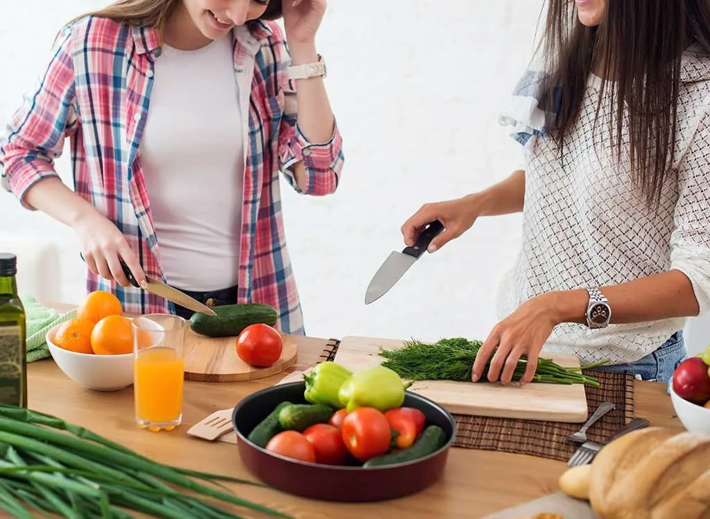
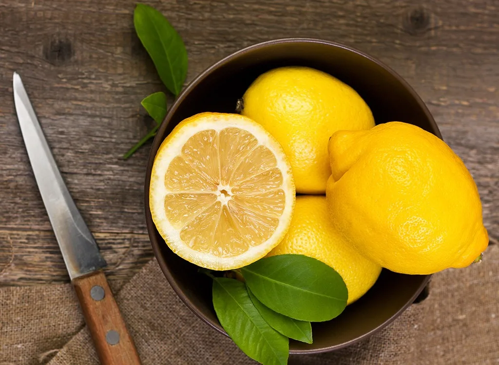
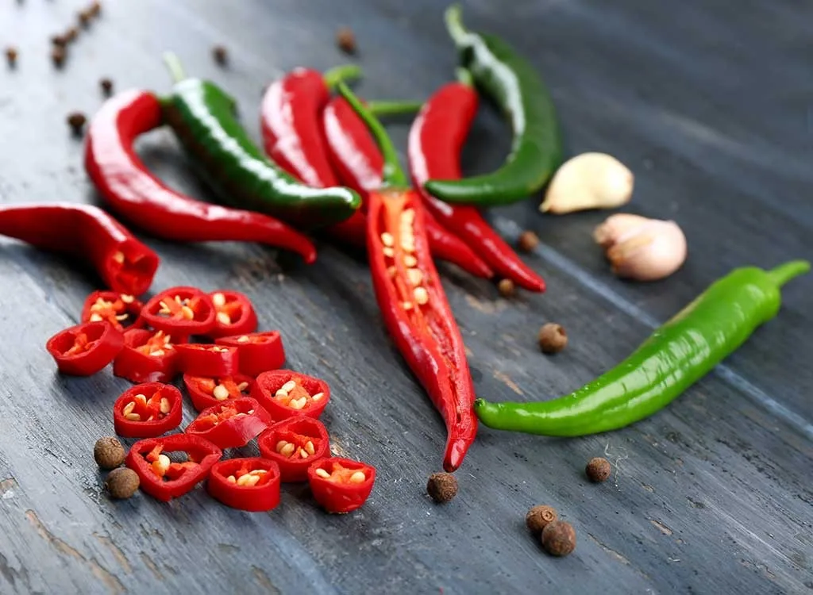
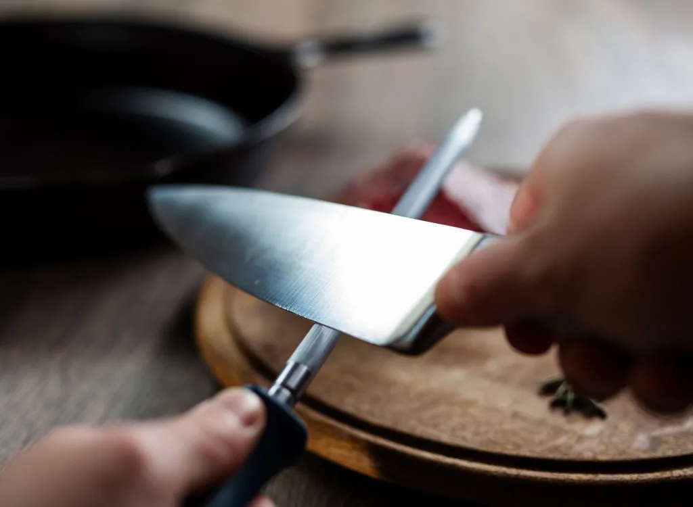

Antes de encender el horno o ponerse el delantal, asegúrese de que todos sus ingredientes estén preparados. Este paso, a menudo denominado "mise en place" o "poner en su lugar", facilitará la preparación de una comida perfecta. Si alguna vez ha visto un programa de cocina, notará que los chefs profesionales ya tienen sus ingredientes medidos y frente a ellos por este motivo: saben que correr al refrigerador por mantequilla o asaltar el gabinete por una lata de especias específica perder un tiempo valioso, poniéndolo en riesgo de cocinar demasiado su comida en el proceso.
Si alguna vez te has sentido frustrado por un plato que es demasiado dulce o demasiado salado, pero no sabes cómo solucionarlo, aprender a equilibrar los sabores puede ser tu as en la manga. Equilibrar un plato significa saber qué sabores realzar cuando su receta se ve abrumada por un solo sabor.


El hecho de que no te guste la comida que te abrasa la lengua no significa que debas evitar los pimientos picantes por completo. Cuando se usa en la proporción correcta, un poco de especia puede agregar cierta complejidad a una receta que de otro modo sería perfecta. Solo asegúrese de equilibrar ese sabor con algo más rico y menos ácido para evitar sobrecargar sus papilas gustativas.
Si bien puede parecer contradictorio, un cuchillo afilado es la apuesta más segura en la cocina. Sin embargo, mantener sus cuchillos correctamente afilados hace más que solo cuidar sus dedos. El uso de cuchillos afilados también hace que sea más fácil obtener cortes precisos, lo que significa carne más tierna, vegetales más delgados y cocidos de manera más uniforme en su salteado y pastel rebanado con mayor precisión.
